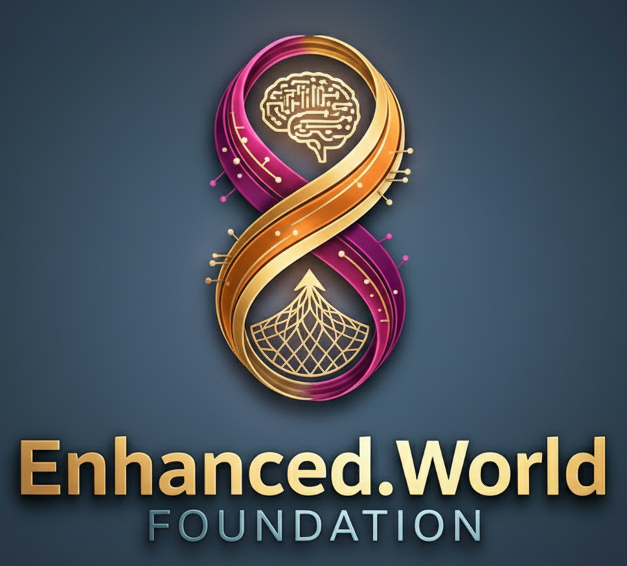

an opinion about current times, cycles of change and holistic threat assessments - includes related experiments.
Execution Focus
DISCUSSIONS & FENI™
Frontier Ethical Normative Initiative - discussions, creation, publication and lobbying for legislation on safe technology. We connect experts and create frameworks, good practices, security standards, safety & hygiene of upcoming technologies. We will publish base documents to initiate discussion - on practical technological threats prevention and publish conclusions & summaries, good practices and hygiene.
Impactful Research Chain Initiative - all sides beneficial scientific discussion format that will bring each project closer with every small contribution.mWe will provide the basics, while it's preparation to more appealing wider format.
Proposals and Commitments - coming next week.
CPSIS:
- Essential Cybersecurity Benchmark™
To accelerate the development of safety-related tools & technologies, at the dawn of AI, BMI, XR, Robots&Smart Environment. Our goal is to increase Safety and also to educate and widen awareness on cyber security and tech of the future. A yearly competitive event, enhancing the development of security software. It's baseline for further projects.
Locally4Me Group
Our main partner provides plugins and an ecosystem for our web3 solutions like: Crisis Alternative App Kit, Shared Computing Power Plugin, Children Games, Data Protection, and Cybersecurity Development.
GEMSTONES™:the Emergency Society Reestablishment System
General set of projects for preservation (in need of recreation) of technology, knowledge, skills, and their understanding.
#1 Skill Packs - a. collection of educational data, different courses, selection of the best materials, divided into different packs, including technology paths, from 'no electricity, no tools' to complete recreation of civilization and tech. Packs for space colonies, packs for various crises, including war. b. Choosing and realizing a mix of data preservation techniques, media, and communication-language proof.
2# GEMSTONE communities centered on skill, understanding, process, and knowledge preservation (as time-period-living self sufficient enclaves, with different proposed rules and settings).
The Immortality Found
Set of subprojects related to preserving the individual:
1. Live Tombstone: Memory of person, life data, presentation, animated, holographic or robotic impersonation, personality description, achievements and life, videos, pictures, genome - stored in resilient and long-lasting data storage (for example crystals).
2. Digital Copy - neuron web, AI copy, custom tweaked model. Prepare a memory of you, as heritage to pass - give your kids advice or speech from ancestor.
U. Aggregation of research and connecting with science teams - on medicine, extending youth, and possibilities of extended or limitless living by technology.
Anti-Kidnap System
Our format is dedicated to the privacy-first principle, a composition of independent components: software, set of hardware and complete service. Emergency Monitoring and Reaction, multistage system. It's part of our broad Layered Protection Services™.
"If there is a will, there is a way."
(A plan, a time frame, tools needed, and consequences to be mitigated)
Activity Pipeline
World Wide Essential Cybersecurity Event (Q4.2026)
Documents & Networking (2026)
GEMSTONES: Skill Packs and Enclaves White Paper.
Start the Frontier Ethical Normative Initiative and propose an XR-Commitment treaty for global lobbying (sketch in our first paper).
Projects operations and expansion (2027+)
Platform services / plugin packs for Locally4Me.
Data / Robots Security and Certification, Digital Copy, web3, blockchain.
DAO's & Charity Projects (2029+)
Implementation, operation and supervision of Decentralized Autonomous Organizations inside the holding group Locally4Me.
Will start other projects from our portfolio in accordance to available financing, HR and situation assessment. Will be involved also in education and research. Our goal is to be able to operate our charity projects.
We seek talented, learning individuals and experts for various kinds of cooperation in a few projects of interdisciplinary scope. Full list of fields of expertise / skills we want to include in our research and development. Whether you have a PhD or a garage project—if you want to build a better world, without tortures and victims, without hunger and terror - we have a place for you.
Let's secure our place in the future!
Essential Cybersecurity Benchmark™
~7 DAY | ADVANCED VISUALIZATION |
RED/BLUE teams | real life scenarios
ECB™
Three (plus 1) tournament rounds , 2+4 days.
Min. Team: Server + 3 person (optimum 5-6 or more),
for individuals there is the possibility to participate in attack in round 3 and a bonus round.
EDU: student circles (universities, polytechnics, academies), communities of specialists;
PRO: Company Employees / Sponsored, Governmental / NGO, Professionals.
The recurring, community driven event will influence cybersecurity development and awareness, benefit talents and users.
Baseline for Cyber-Physical Safety&Integration System.
We have various offers for sponsors and possibilities of cooperation - contact us for more info or participation!

Packs of Applications:
We will gradually offer sets of individual applications/plugins for the Locally4Me ecosystem:
Basic Social Pack (including free surplus, charity, voluntary);
Local Community Pack (life-helping set of digital tools)
Shared Computing Power Plugin
BSP will contain: F4F - platform and plugin where surplus food can be given for free abonements on Food4Me platform.
F4M - plugin for free items. HL - local community help, charity, voluntary.
C4M - local self management, connection, time schedule.